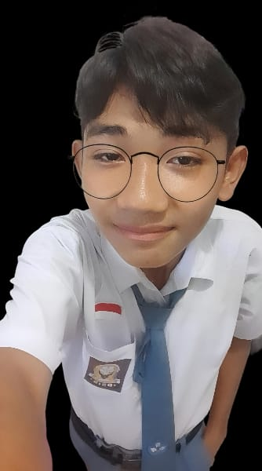

Mahasiswa Ilmu Komputer yang berfokus pada perpaduan estetika desain dan fungsionalitas web development.

Saya adalah mahasiswa Ilmu Komputer Universitas Pattimura yang antusias dalam bidang desain, pemrograman web, dan videografi. Sejak kecil saya gemar menggambar, sebuah hobi yang kini saya transformasikan ke dalam bentuk visual digital.
Selain hobi menggambar, saya menikmati eksplorasi film dan game sebagai sumber inspirasi kreatif. Saat ini, saya terus mengasah skill teknis saya untuk menciptakan solusi digital yang berdampak luas.
Eksplorasi seni visual melalui platform web sederhana untuk menampilkan karya ilustrasi saya.
Kompilasi sinematik momen berharga sepanjang 2024 dengan sentuhan editing kreatif.
Kumpulan cuplikan video pendek yang menangkap keindahan visual di sekitar saya.
Punya ide proyek atau sekadar ingin menyapa?